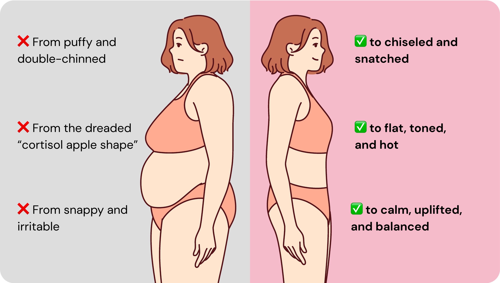
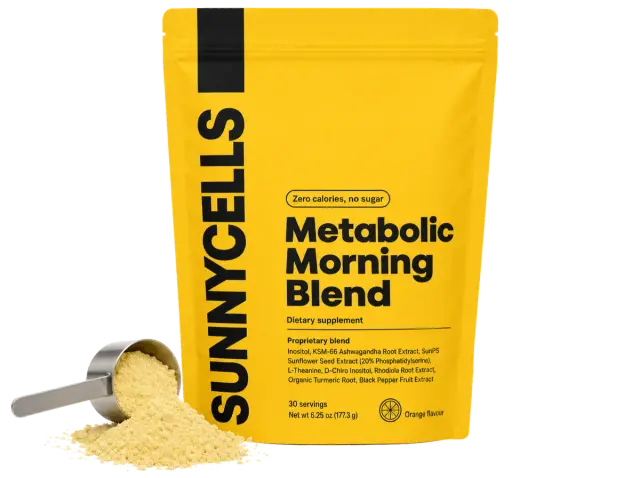
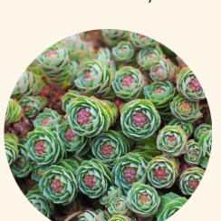
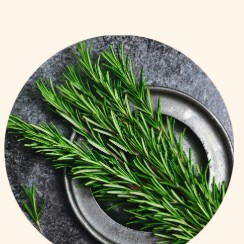
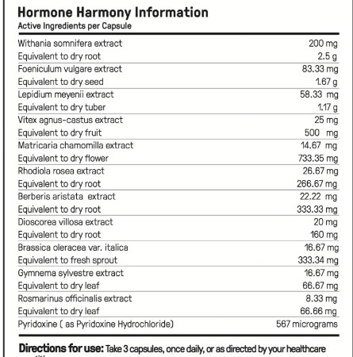

Weight Loss
Breakthrough1
Breakthrough1
The adaptogenic herb that drops the cortisol levels by 44% for better sleep & mood, and to reduce puffiness.
I love this formula. It helped me with my weight loss journey. My face is not as bloated, I see my jawline, my neck is thinner, my stomach is flatter and the curves of my waistline are a lot thinner.
Try Metabolic Morning Blend: Supports Healthy Cortisol Levels to Help Flatten The Belly, Snatch The Face & Target Hormonal Weight At Its Root, Without Diets & Time-Consuming Routines
With ingredients shown to:“It made me so calm and centred, my husband instantly noticed the change.”
“My confidence is back. My belly feels flat. And I feel like myself again!”
“Most effective dietary supplements I’ve discovered recently, and a real game-changer for me.”
Marie Claire’s Picks for Perimenopause
“My happiness is returning and my body is stronger. I’m absolutely blown away by how fast it works!”
“My tummy is definitely better than it was, which is nothing less than a freaking miracle.”
Our ingredients are proven in thousands of scientific papers to help optimize hormones for women of all ages... So they can finally END bloating, puffiness, mood swings and poor sleep
I feel 20 years younger, I sleep like a baby, my joints feel oiled... and I’ve lost weight without even trying. These capsules are pure magic.
I feel like I’m glowing from the inside out. My hair’s fuller, my face is tighter, my belly is vanishing...and I feel stronger, sharper, and more alive than I have in YEARS
I was sweating through my pajamas every night and then I’d be exhausted all day, snapping at everyone. Two weeks into this, I’m sleeping better, I feel calm, and I’m not bloated 24/7. Even my jeans fit better now.
I didn’t expect much. Just figured I’d try it because I was desperate. But WOW... My pants are looser, my brain fog is gone and my energy is back. Reordering now.
And that’s when everything changes in their bodies.

On the inside? There’s a hormonal storm wreaking havoc on women's energy and mood.
They feel exhausted and snappy during the day...
Wired & tired when their body needs to sleep or relax...
If that ever happened to you, it’s not your fault. These are symptoms of too much cortisol in the body...
And unfortunately, it doesn’t stop here.
By the time you reach menopause, your key hormones plummet by a whopping 60%...
These are the hormones that keep your skin tight and glowy, your hair luscious...
Just like in your 20s and 30s...
This means that, as you age...
And as if that weren't enough...
Your sleep routine goes out the window, and your mood becomes a ticking timebomb.
If you’ve experienced some of these symptoms... then you probably noticed that...
Diet and exercise just won’t cut it anymore.
Sure, they’ll keep the body strong and healthy...
But won’t totally fix cortisol spiking in the body...
Fortunately – there’s a way to help with that.
And it all starts by going to the root cause...
So you can LOVE your body once again...
And that’s when everything changes in their bodies.
Are all symptoms of excess cortisol that forces the body to hold onto FAT and WATER...
And that’s only what women see in the mirror
On the inside? There’s a hormonal storm wreaking havoc on women’s energy and mood.
They feel exhausted and snappy during the day...
Wired & tired when their body needs to sleep or relax...
And unable to lose weight, no matter what they do.
If that ever happened to you, it’s not your fault. These are symptoms of too much cortisol in the body...
And unfortunately, it doesn’t stop here.
By the time you reach menopause, your key hormones plummet by a whopping 60%...
These are the hormones that keep your skin tight and glowy, your hair luscious, your body weight down, and your water weight out of the system...
Just like in your 20s and 30s...
This means that, as you age...
Not only do you accumulate stubborn weight against your will...
But you also gain more water weight.
And as if that weren’t enough...
Your sleep routine goes out the window, and your mood becomes a ticking timebomb.
Here’s why that happens:
So if you’ve ever witnessed...
If you’ve experienced some of these symptoms... then you probably noticed that...
Diet and exercise just won’t cut it anymore.
Sure, they’ll keep the body strong and healthy...
But won’t totally fix cortisol spiking in the body... or the rapid downfall of your ‘slim’ hormones...
Fortunately – there’s a way to reverse that.
And it all starts by going to the root cause...
Because once you fix elevated cortisol levels...
And balance the ‘slim’ hormones your body is now missing...
You can get back that sexy confidence...
The snatched face, the toned body...
So you can LOVE your body once again...
No matter your age, body type, genetics, or unique hormonal profile!

We have spent the last 8 years on the cutting-edge of natural hormone-balancing science...
And after searching far and wide for the most groundbreaking, up-to-date clinical research on the planet ...
We have finally done it:
We’ve created the world’s first and only 100% natural formula that packs 12 clinically-backed hormonal-balancing nutrients in one single formula...
To target the real, root cause of female weight gain, bloating and puffiness as quickly, effectively and safely as possible...
TRY METABOLIC MORNING BLENDThe adaptogenic herb that drops the cortisol levels by 44% for better sleep & mood, and to reduce puffiness.
This herb has been used to support estrogen balance in women for thousands of years.
This extract balances blood sugar, stops fat from accumulating and balances ‘fat’ hormones.
The natural herb that reduces water retention, eliminating heaviness and puffiness, while flushing out nasty toxins that accumulate in the tissues.
The natural herb that reduces water retention, eliminating puffiness and flushing out toxins.
The hormone-balancing Mediterranean fruit that keeps you healthy and buzzing with energy at any age.
While Bringing Back Uplifting Good Mood, Deep Sleep and Sexy Libido
Ashwagandha drops cortisol levels by up to 44% in just a few minutes by gently blocking cortisol, the hormone that blocks fat and causes water retention, while blocking the body’s ability to burn fat.
Maca reduces hot flashes and night sweats by up to 87% in just 4-7 days, while turning up the heat in the bedroom to naturally boosting desire. It also stimulates your glands for better hormone production.

Rhodiola is shown to lift your mood, boost energy and clear your head in just 30 minutes, while helping balance cortisol so your energy stays steady all day.

Rosemary reduces water retention that make us feel heavy and look puffy, and flushes out nasty toxins that make the body sick and weak, and the mind foggy.
Known as the “Sugar Destroyer” that reduces sugar cravings, drops blood sugar, and manages hormonal weight gain for healthy weight loss.
Chaste Berry helps the healthy production of your ‘slim hormones’ by balancing estrogen and naturally boosting estrogen, progesterone, and prolactin.
Fennel Seed supports hot flashes, excessive sweating, cramps, anxiety and depression, while restoring natural lubrication, desire and comfort in the bedroom.
Berberine Extract is shown to balance blood sugar levels and shift hormonal weight by inhibiting fat storage and regulating fat storage.
Wild Yam Extract has been used as a natural alternative to estrogen therapy for symptoms of menopause and menstrual pain for 100s of years.
Broccoli Sprout Extract shields you against dangerous changes in estrogen during Menopause, flush out the nasties and keep a good balance.
Chamomile Extract is the Swiss knife of hormonal digestive symptoms, from PMS-triggered bloating and indigestion to painful menstrual cramps.
Speeds up metabolism, allows the body to break down protein, fats and carbs easily, so you burn more calories and fat, faster.
Feel the first wave of calm as cortisol — your body’s main stress hormone — begins to drop. Mood swings feel softer, your head feels clearer, and sleep starts to come easier. Some women even notice the puffiness in their face easing overnight.
Your clothes start to feel looser as stubborn hormonal belly bloat begins to shrink. Hot flashes and night sweats calm down, leaving you sleeping deeper and waking with more energy. Sugar cravings aren’t controlling your every thought anymore.
Catch your reflection and see it — your once puffy face now looks more chiseled, your jawline sharper. Your belly is flatter, your skin more vibrant, and your moods far more stable. Energy is steady all day without the caffeine crashes.
Don’t be surprised when your friends and family do a double take — the puffiness, bloating, cranky moods, and stubborn hormonal weight are gone. You feel balanced, confident, and comfortable in your own body again... and the best part? You didn’t have to starve yourself, run a marathon, or give up the foods you love to get here.
Here at SUNNY CELLS, we make sure our customers love their product, or we’ll refund 100% of their investment on the first bottle. We’re so confident that you’ll enjoy Hormone Harmony, that we’ll bear all the risk.
No one likes paying for shipping. That’s why when you purchase two bottles or more, we take care of the shipping for you. You save more when you buy more!
Many women notice improvements in bloating, mood and energy with regular use — some sooner, some later. Try Hormone Harmony risk-free: if you’re not satisfied for any reason within 60 days, claim a refund and we’ll return your money.
We want you to feel incredible effects and have visible results from using Hormone Harmony. That’s why if you’re not happy with how it works for you, we’ll give you a hassle-free, no-questions-asked refund on your first bottle.
This product has helped in so many ways with my menopause. From the little things to the big things. Sleep, brain fog, mood are just some of the things that I have found a difference in since taking Hormone Harmony.
I love Hormone Harmony. It has done wonders for my mood and gut health. Their postage times are really good.
This has really helped and I can’t do without it!
I had read all the 5 star reviews and wanted to see if Happy Hormone really worked that well. After 4 bottles I feel less agitated, less bloated, more calm. The day to day jobs are less triggering and I feel happier.
I’ve notice a huge difference in how I handle things mentally and physically combined with the burst or energy to get me through the day while being calm and relaxed resulting in a restful nights sleep.

Tobie comes from Germany where he graduated with a master’s degree in nutrition science. Tobie creates our natural formulas with the “German precision” that sets us apart from other brands.
Matt founded SUNNY CELLS in 2017. Driven by curiosity, learning, an obsession with high quality product formulation and a passion for natural health, his search for potent plant-based ingredients takes him around the world working to improve lives.
Dr. Aimée has been in private practice since 2001, currently at Santa Cruz Integrative Medicine in Santa Cruz, CA. She specializes in women’s health including menopause management, bio-identical hormone balancing, and functional digestive issues.
Annie is a licensed naturopathic doctor from Vancouver, Canada, with a passion for natural healthcare. Annie has extensive knowledge in women’s health, natural medicine, and has developed an online coaching program “The Symptom-Free Period System.”